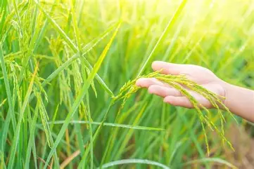
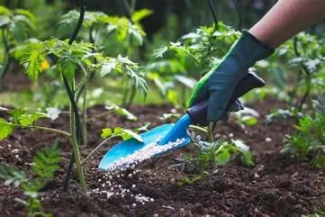
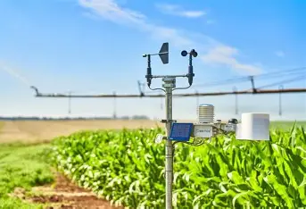

Grow Smarter • Farm Better • Harvest More

Get best crop suggestions based on season and soil type.

Know the right fertilizer and dosage for better yield.

Plan farming activities using weather insights.